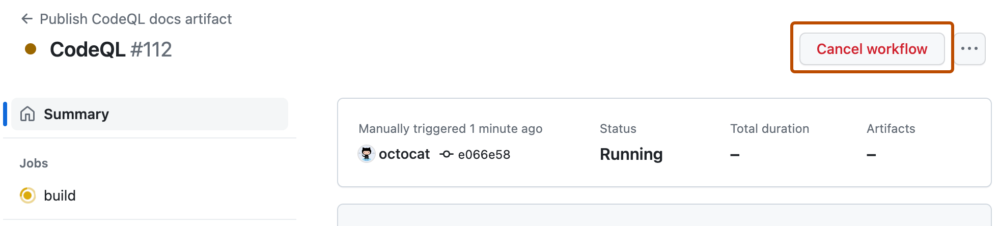

On GitHub, navigate to the main page of the repository.
Under your repository name, click Actions.

In the left sidebar, click the workflow you want to see.

From the list of workflow runs, click the name of the queued or in progress run that you want to cancel.
In the upper-right corner of the workflow, click Cancel workflow.
